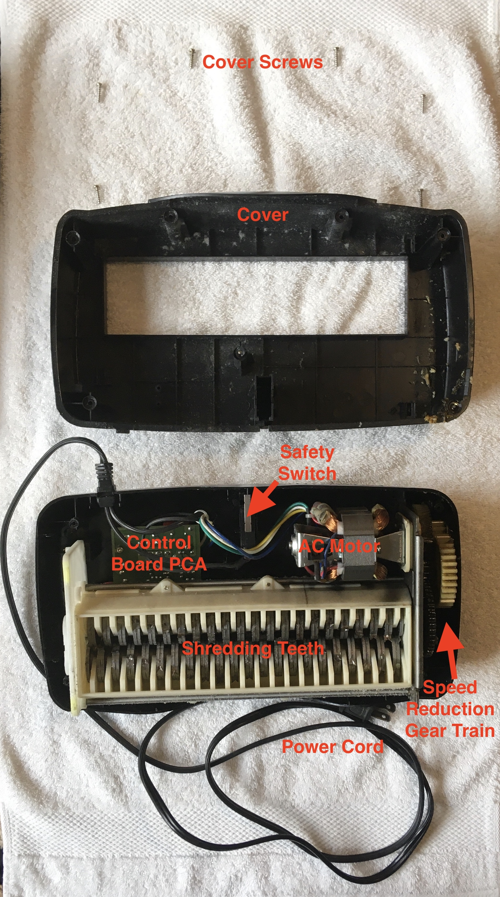
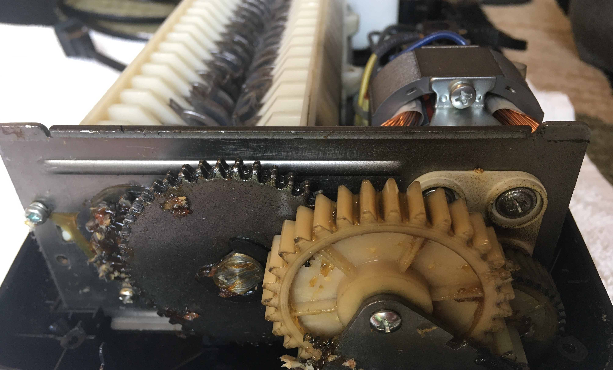
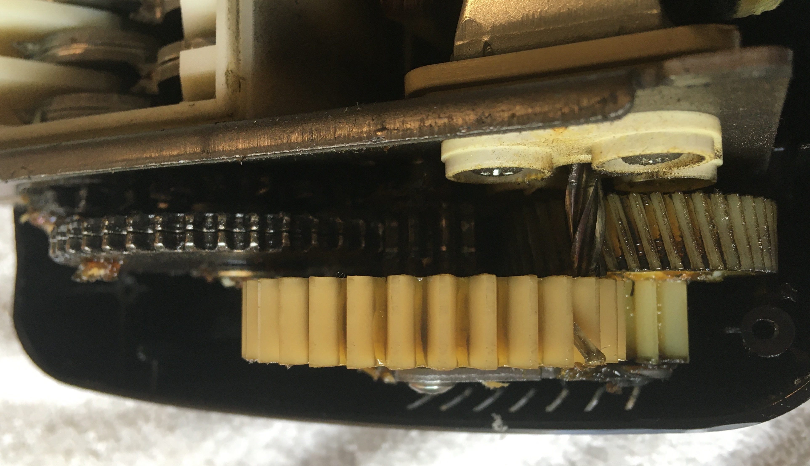
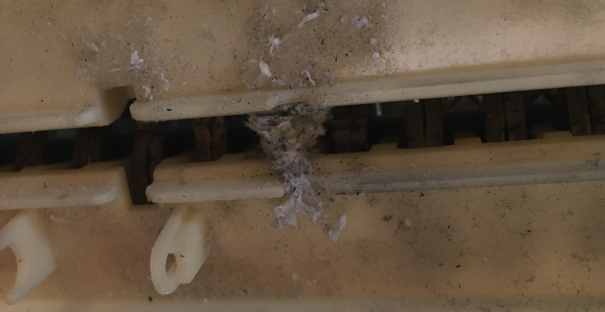

Introduction
My grandma's paper shredder had jammed so she asked me to take a look at it. Since the paper jam was deep between the teeth, I decided to disassemble the shredder to take it out.
Labelled Exploded View of Paper Shredder
Gear Train
I got a kick out of looking at the gear train. It was the first gear train I had seen in a house appliance that used metal gears. The use of metal gears instead of plastic ones seems justified since tearing paper can require high amounts of force, particularly when stacks of paper are shredded at the same time. The gear train begins with a high lead angle worm connected to the motor shaft. The worm drives a larger helical gear, leading to a reduction in speed and an increase in torque. Through a series of compound spur gears, the speed is reduced further and the torque is increased further. At the end of these speed reduction gears are two meshed spur gears of equal size simultaneously driving the two shredding teeth rollers. The speed reduction and paired torque accumulation is useful in this application as one would desire the shredder to have great strength and spin slowly enough so that paper is not torn instantaneously out of your hands when inserted into the machine.
Demonstration of the Gear Train in Action
 Views of the Gear Train
The Offender
After unscrewing the cover on the paper shredder, I then removed the shredding mechanism (the gear train and shredding teeth) simply by lifting it out of the slots it was resting in. From there I was able to better identify the offender jamming the shredder and remove it using a pair of needle-nosed pliers.

Shredding Mechanism Removed
Wad of Paper Jammed in Teeth
Fixed!
Having removed the jam, I reassembled the machine and gave it a quick test. With the one exception of the automatic sensor not working (I think that was already broken), it worked splendidly! Mission accomplished!
Paper Shredding Test